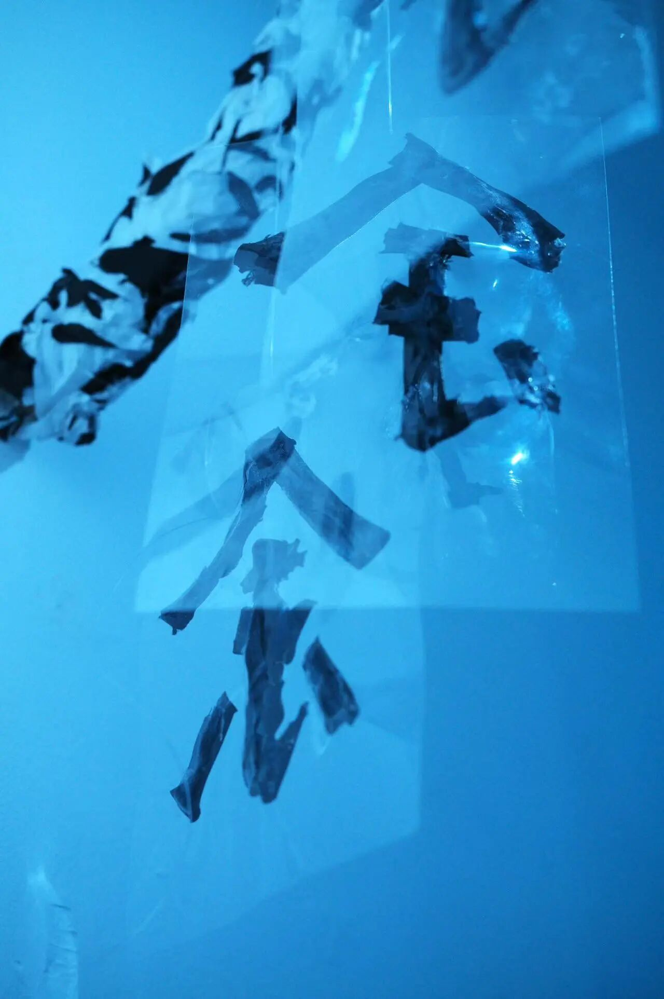
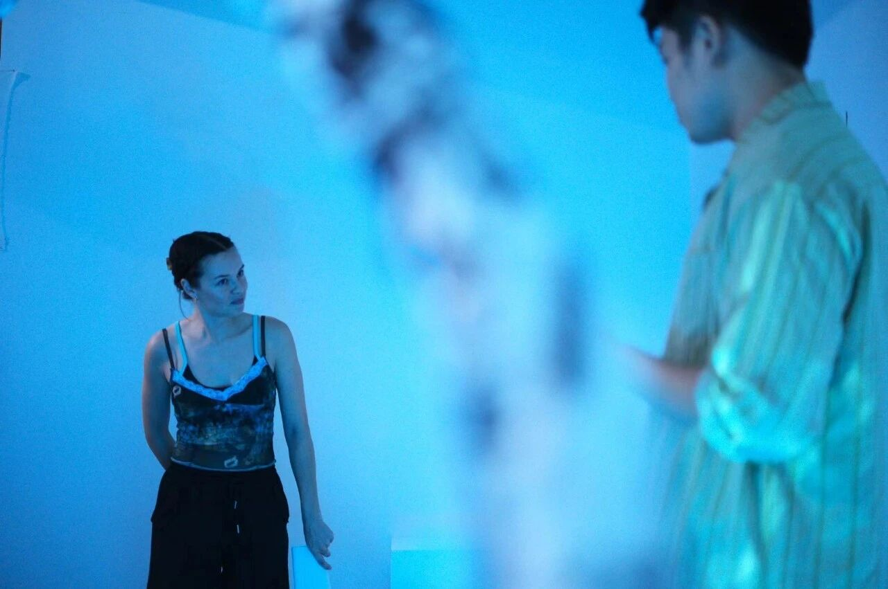
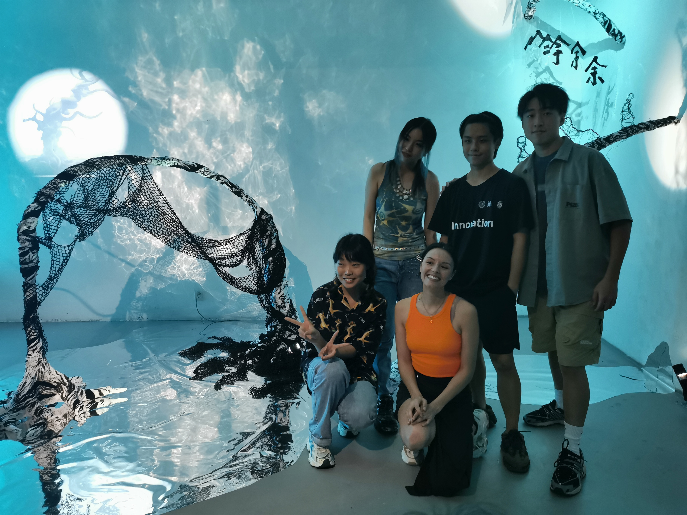
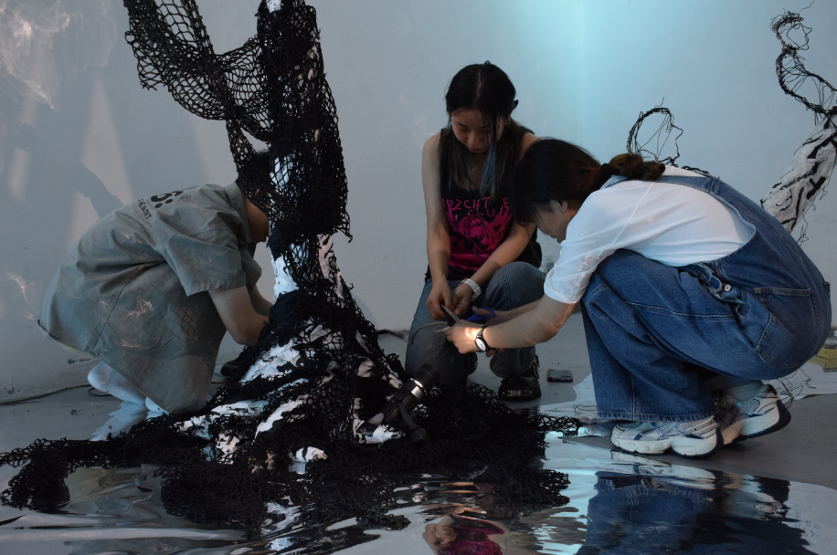
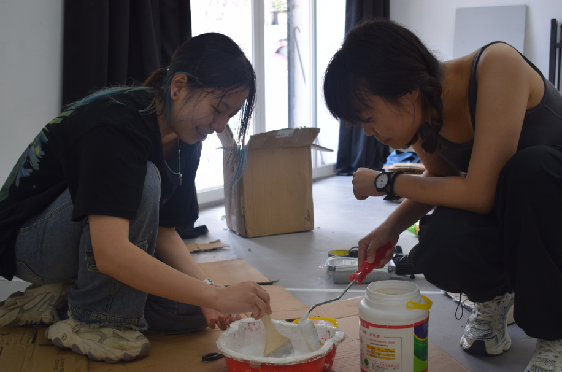
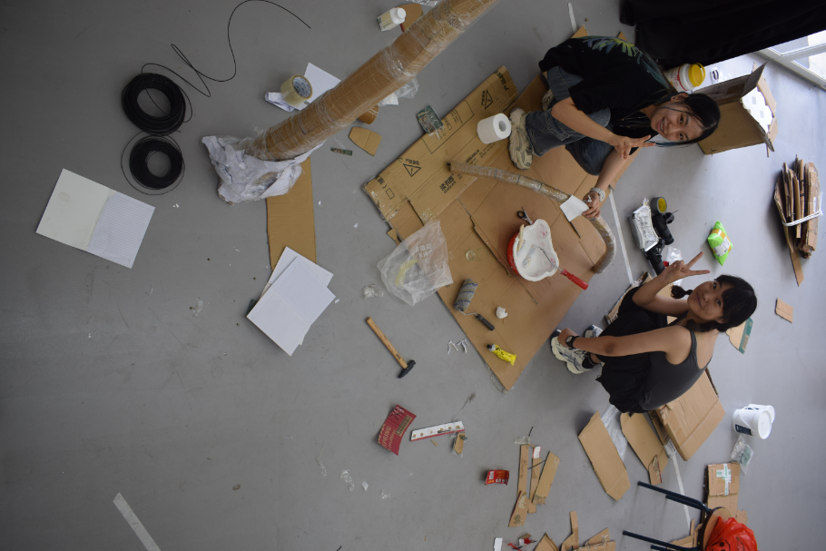
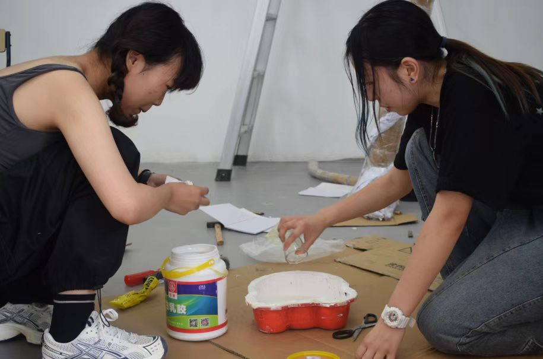
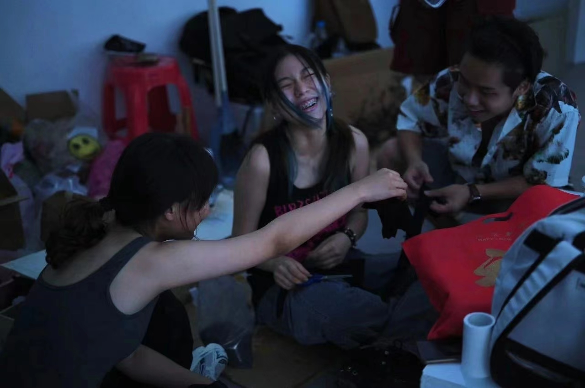

This is a stage installation I created for a theatre piece of the same name.
The play is based on the personal experience of the artist Chye-Ling. It tells the story of a woman of New Zealand–Chinese heritage who tries to find a sense of belonging between two identities. Her ancestral home lies in a small village in China where there is a bridge called the Black Tree Bridge. It is said that anyone who walks across this bridge will remain in the village for the rest of their life, for one reason or another, until they grow old and die.
The protagonist spends her life searching for this bridge, yet she never finds it.
I imagine that through her endless search, the bridge has already merged with her. She seems to be entangled in a vast black net, unable to see where she is going. She lowers her head and tries to recognize her own reflection in the river. The water becomes more and more blurred, while the image of the bridge grows clearer and clearer.
Perhaps this is a deep blessing.
Or perhaps a curse.